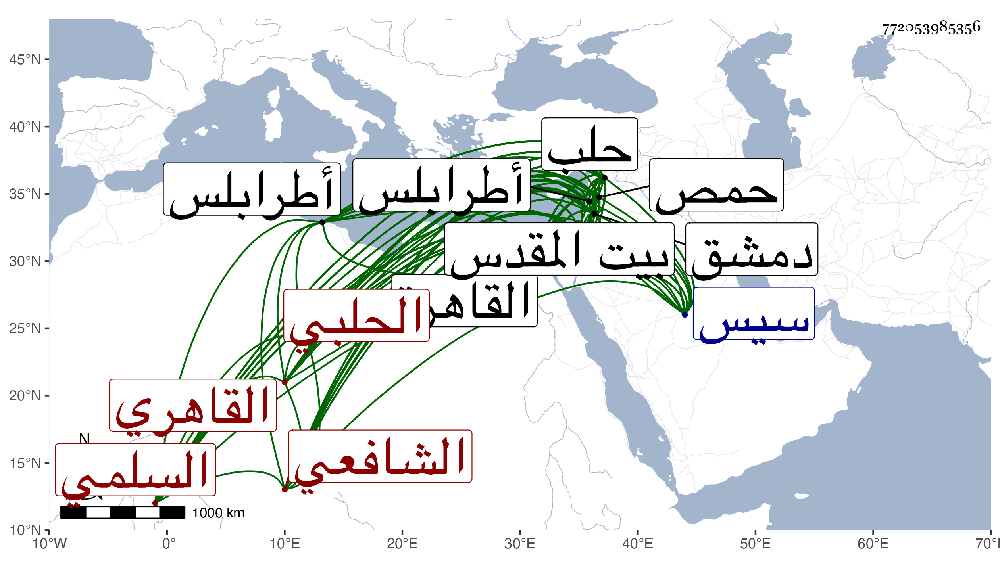

0902Sakhawi.DawLamic.ITO20230111-ara1.EIS1600.772053985356
Biography ID: 772053985356
583
محمد بن داود بن فتوح بن داود بن يوسف بن موسى وأملاه مرة بحذف داود وبإثبات يعقوب بدل موسى الشمس بن البهاء بن الفتح السلمي الحلبي ثم القاهري الشافعي ويعرف قديما بابن الرداد وأخيرا بقاضي الجن أو شيخ الجن . ولد سنة ثلاث وستين وسبعمائة بحلب ونشأ بها فحفظ القرآن والشاطبيتين والمنهاج الفرعي وألفية ابن معطي وتلا بالسبع على العز الحاضري وبيرو وأخذ في الفقه عن الزين عمر بن محمود الكركي والد التاج عبد الرحمن الماضي والشمس محمد الفوي وعليه اشتغل في النحو أيضا وأذنا له في الإفتاء بل حضر دروس الشهاب الأذرعي وسمع صحيح البخاري على الجمال بن العديم ، وناب في القضاء لابن أبي الرضي الحموي وغيره بأعمال حلب بل استقل بقضاء سيس ، وحج قبل القرن من حلب ثلاث مرات وارتحل منها لدمشق والقدس وفيه سنة سبع وتسعين سمع على الشمس المفعلي الصحيح أيضا أنا الحجار ، ودخل القاهرة فقرأ في سنة إحدى وثمانمائة على ابن الملقن من أوله إلى نحو الزكاة ، وحضر دروس البليقني ولازمه سنتين ونصفا حتى شهد بصلاحيته لصلاحية بيت المقدس واستقر به الظاهر برقوق فيه عوضا عن الزين القمني فلم يزل الزين يسعى حتى أعيد قبل سفره وعوض هذا بوظائف في حلب ، ورجع إليها فلما طرقت الفتنة تحول عنها وناب عن قضاة دمشق بصرخد وحمص ، ثم جاء القاهرة فناب في قضائها ، ثم ولاه الناصر قضاء طرابلس استقلالا ثم انفصل عنه ورجع إلى القاهرة واستقر في قضاء المحمل بعد سنة خمس عشرة فدام نحو ثلاثين سنة . وكان مليح الكلام مضحك النادرة خفيف الروح عجيب الشكل كثير الاستحضار لنظم ونثر وأحاديث وفوائد ذا وقائع ومصادمات للرؤساء وهجو كثير لا يحاشى عنه أحدا حتى أنه هجا المؤيد وكذا هاجى ابن حجة وابن الخراط وغيرهما من الشعراء ولكنه لمزيد سلامة فطرته واستبعاد ترقيه لغالب المراتب كان يمتنع المتعرض لهجوهم عن إيذائه بل يحسنون إليه مع كون شعره سافلا مما يعلم من قليل أوردته منه في المعجم ، وكان في مبدأ أمره كثير اللهج بعلم الروحاني ويدعى استحضار الجان وصرع من أراد بحيث لقب لهذا شيخ الجن ولا حقيقة لذلك بل كثير مما ذكر في ترجمته متوقف فيه لكون الاعتماد فيه إنما هو عليه . وبالجملة فكان من النوادر . مات في ربيع الثاني سنة خمسين بالقاهرة سامحه الله وإيانا .
